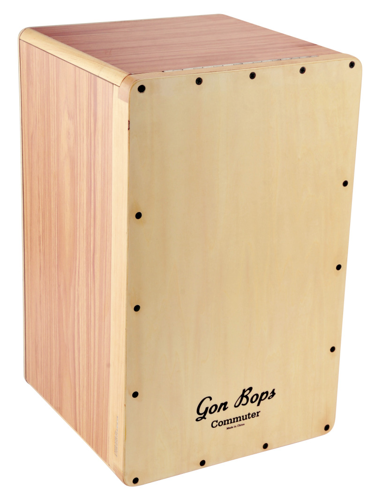
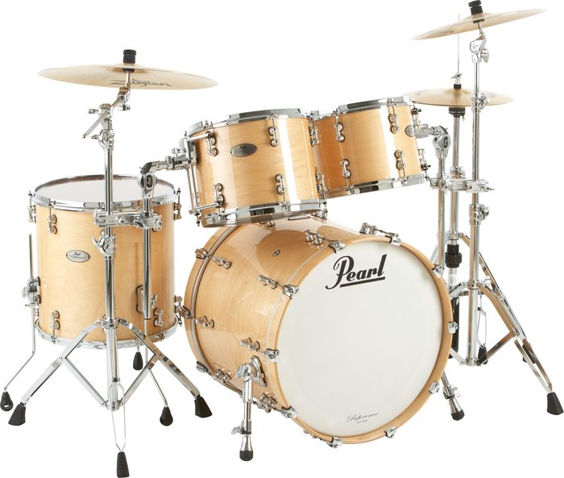
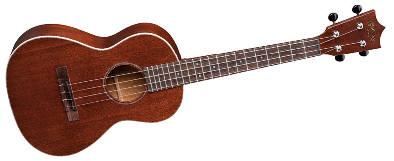
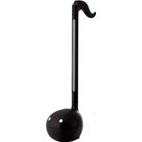

Personal Interest Content
Dominic
That is my name and it is the best name in existence. My life revolves around my wonderful name. If I were to have been named something bad like Jilly or Philly or Suav people would not treat me with respect. My entire livelyhood is the way it is because of my name.
PS. Fun Fact: I have changed my name 3 times in my life.
PS. Fun Fact: My birth given name was Joseph.
PS. Fun Fact: Those are lies and you fell for them!
Music and such
  

I play many instruments. I own a lot. My sister gets annoyed very quickly when I play them. She always gets mad when I get a new one. But that's irrelevant.
Drums
I have been playing drums for 8 years (since 7 I think I did my math right). I've been in two bands and in both I've played drums. I guess I'm in a third but that one doesn't count as much. That one I play a bunch of different instruments but that doesn't matter now. I'm pretty good if I may say so myself.
Ukulele
I play that as well. I'm not amazing but I can get along. Been playing for a couple of years
Bass
I'm fine at bass. I can play. I'm not anything to brag about on the bass though. (That's a saying right?)
Banjo
Not great. But I definitely can play a good amount of songs on the banjo.
Ton of other percussion instruments, including but not limited to
Cajon
Slap-top Cajon
Bongos
Bongo Cajon
Steel Tongue Drum
Hang Gudu
Melodica
Okay... Melodica isn't percussion, but that doesn't matter. I wanted to list it.
Otamatone
That's a lot I know. My family is not a family of billionaires (or even millionares). I mostly get those as gifts an co-buy them with my brother.